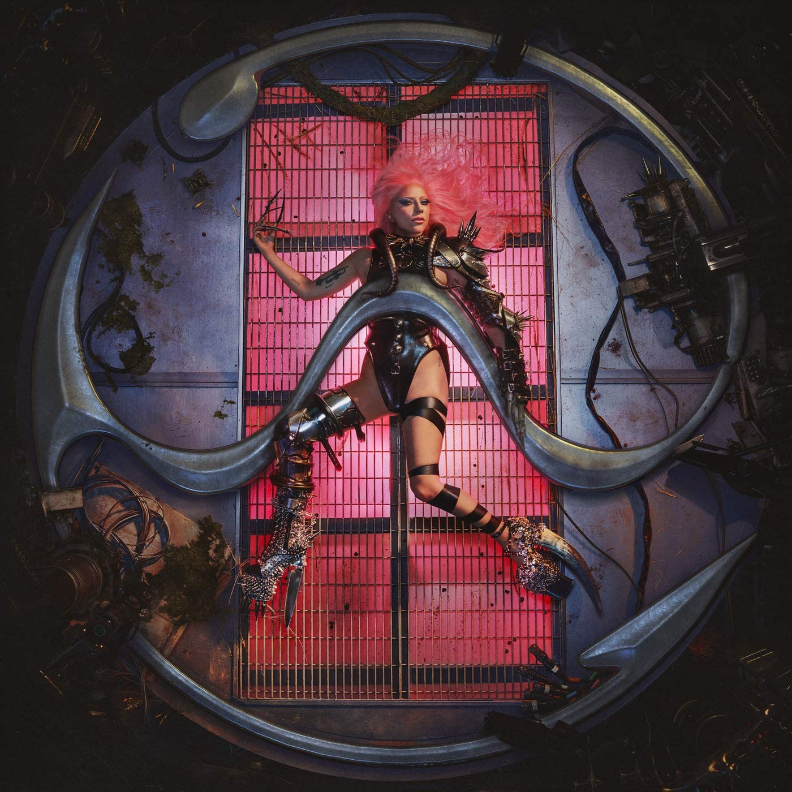
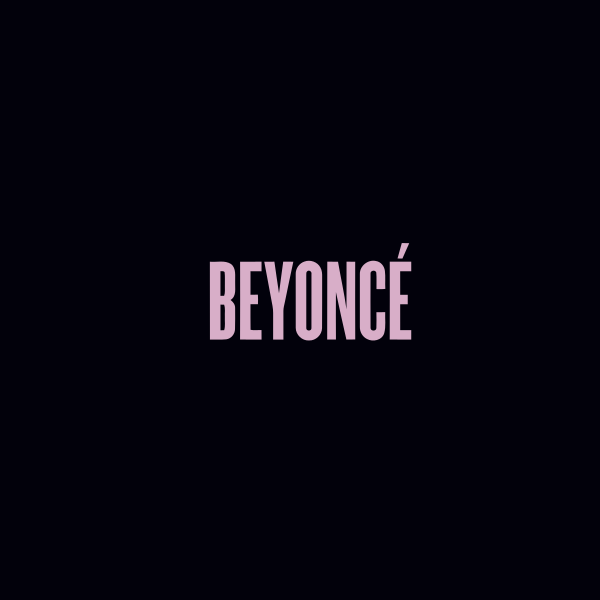
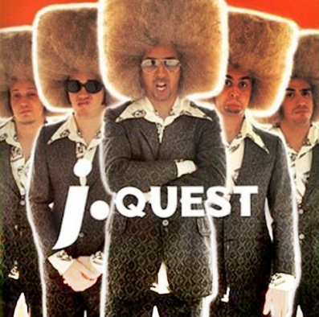
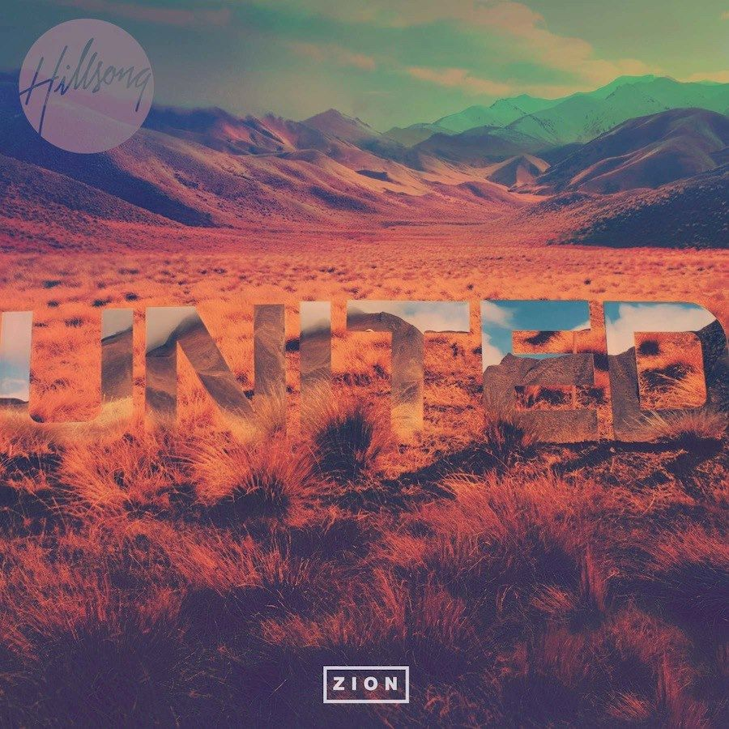
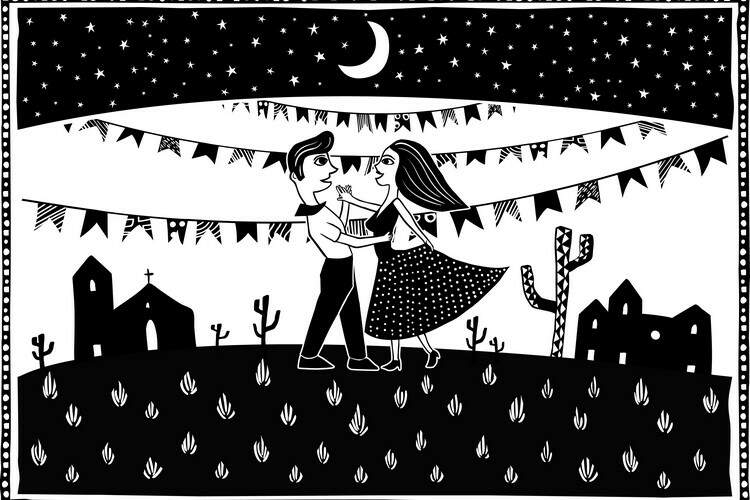
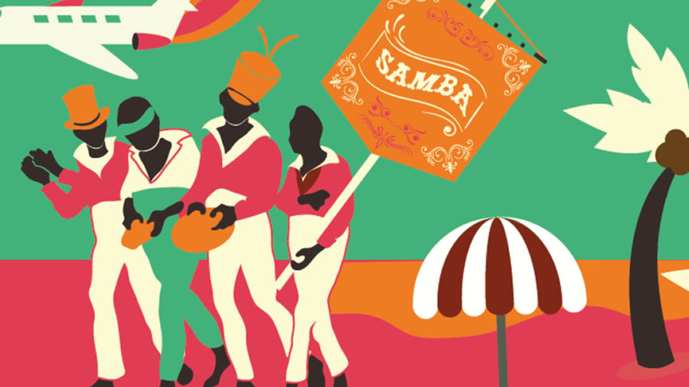

Slipknot
Slipknot é uma banda norte-americana de metal formada em Des Moines, Iowa, em 1995. Seu estilo musical é o nu metal...
Álbuns




Categorias


Sobre
Projeto exemplo desenvolvido por Jonatas Santana Souza.